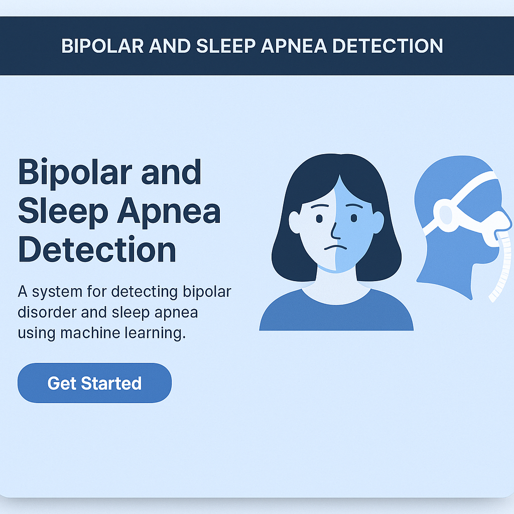
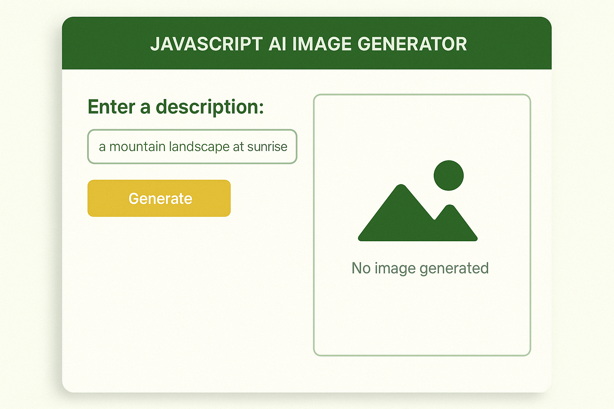
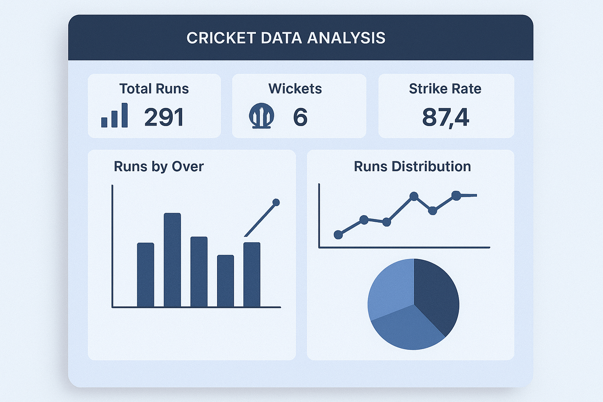
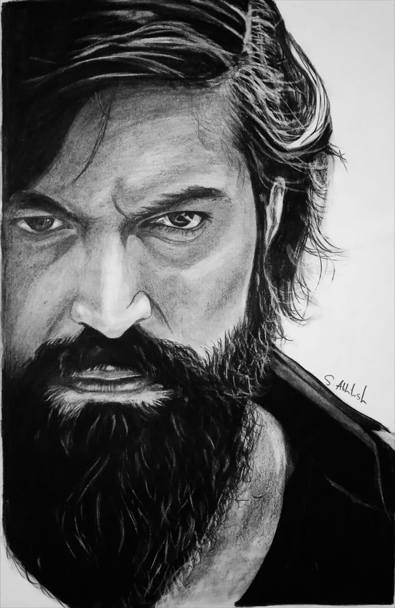
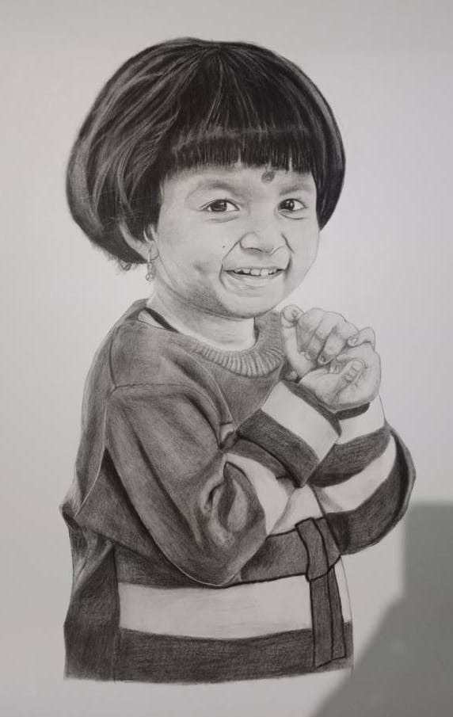
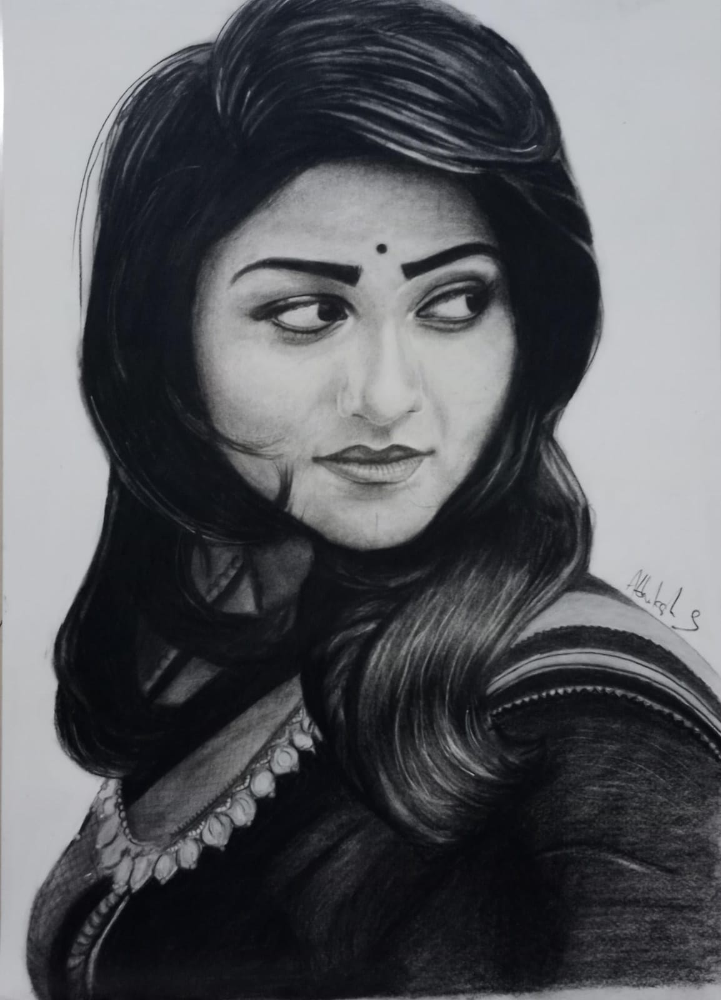
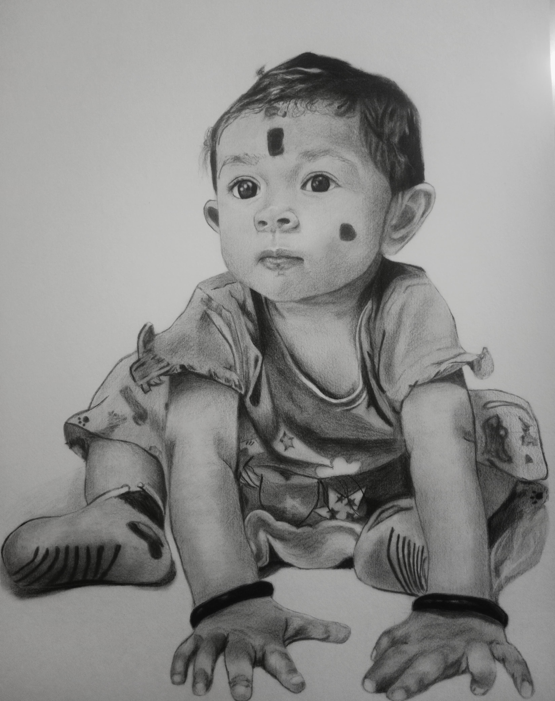

"Iam a Passionate Developer and Artist. This is my Personal Portfolio"
Hi, I'm Abhilash! I'm a passionate developer and artist with a strong foundation in creating both functional and visually engaging experiences. With a love for coding and pencil sketching, I enjoy blending technology with creativity to build innovative solutions. Whether it's developing interactive web applications or capturing the world through sketching, I thrive on bringing ideas to life in ways that are both intuitive and visually compelling. My work reflects my dedication to continuous learning and my desire to push the boundaries of what's possible.
I also enjoy analyzing real-world data to uncover meaningful insights and trends, especially in the fields of sports and mental health. I strongly believe in the power of design, storytelling, and technology working together to create impactful digital experiences.
Through my art, I try to capture emotions and everyday moments using simple pencil strokes that speak beyond words.
Feel free to explore my projects, and let's connect if you'd like to collaborate!
The Bipolar and Sleep Apnea Detection System is a machine learning-based health analytics project designed to assist in the early identification of Bipolar Disorder and Sleep Apnea using physiological, behavioral, and sleep-related data. By leveraging data-driven insights and predictive modeling, this project aims to support clinicians and researchers in understanding risk factors and symptoms associated with these conditions.
Bipolar: MDQ, BDI, EEG, mobile apps
Sleep Apnea: Polysomnography, wearables, AI models
Python, HTML/CSS/JS

The JavaScript AI Image Generator is a web application that allows users to generate images based on text prompts using AI. Powered by a backend AI model (such as OpenAI’s DALL·E or similar), the app provides an intuitive interface for users to input creative descriptions and receive high-quality, AI-generated images in real tim
DALL·E, HTML/CSS/JS, Node.js, REST API
JavaScript, HTML, CSS

Developed comprehensive cricket data analysis models in Excel, utilizing advanced functions like pivot tables, VLOOKUPs, and data visualization tools to identify key performance trends for individual players and teams, providing actionable insights to optimize strategies and decision-making within a cricket team.
Excel, Power BI, Power Query
DAX, M

Each sketch captures a moment, a mood, or a story told in shades of graphite. Through simple lines and shadows, I express what words often cannot.



Through simple lines and shadows, I express what words often cannot.

If you're interested in getting a custom pencil sketch like these, feel free to contact me!